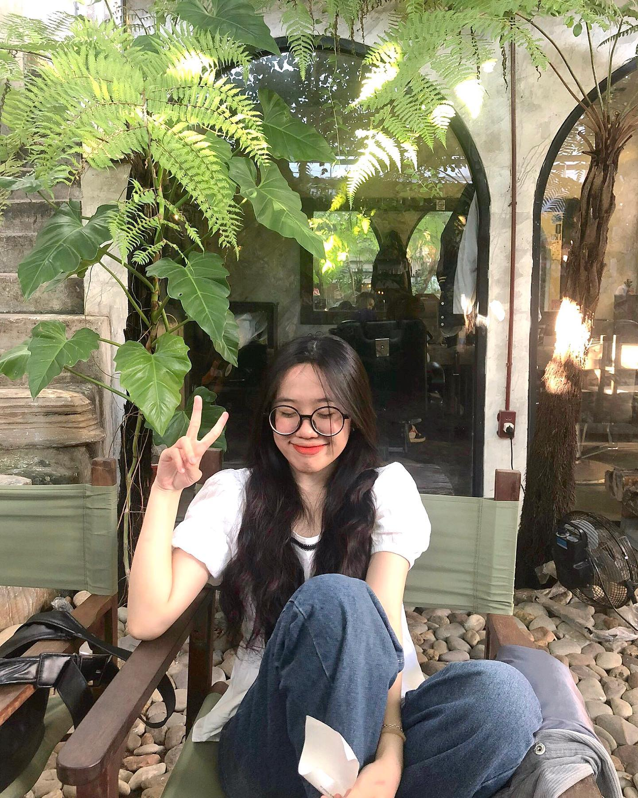
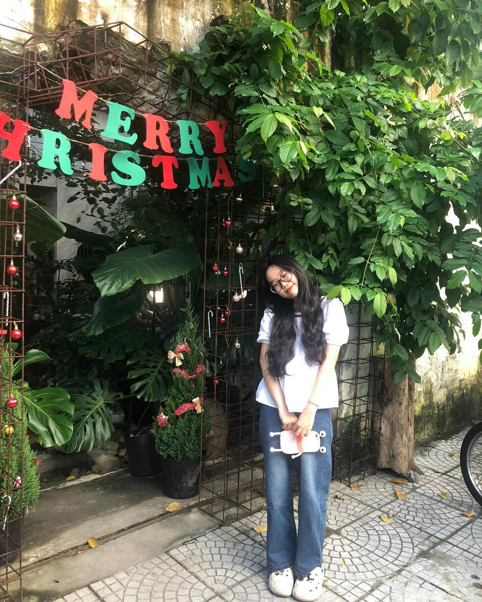
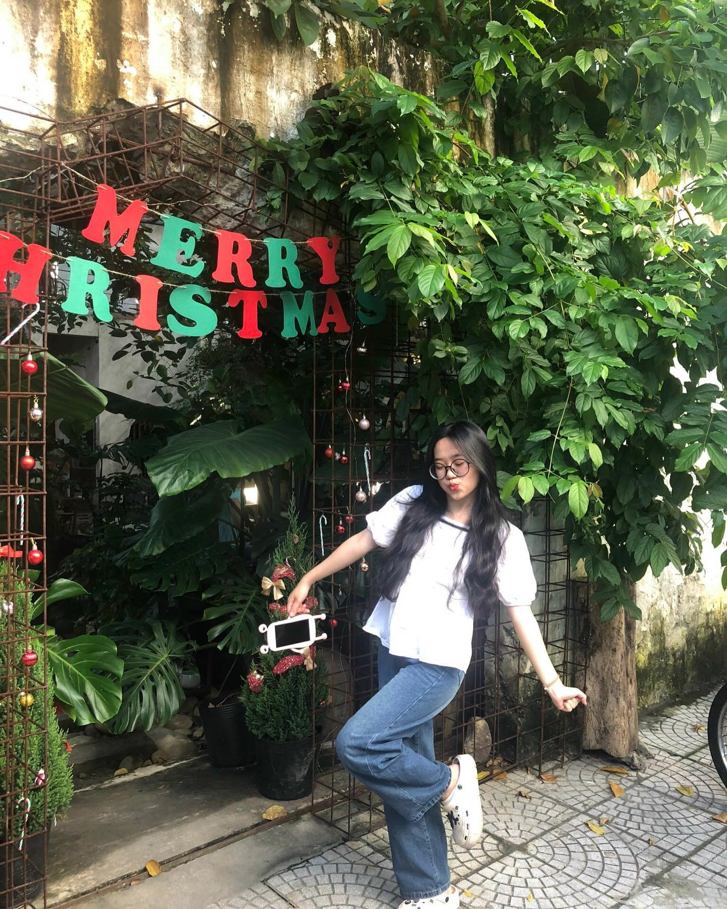
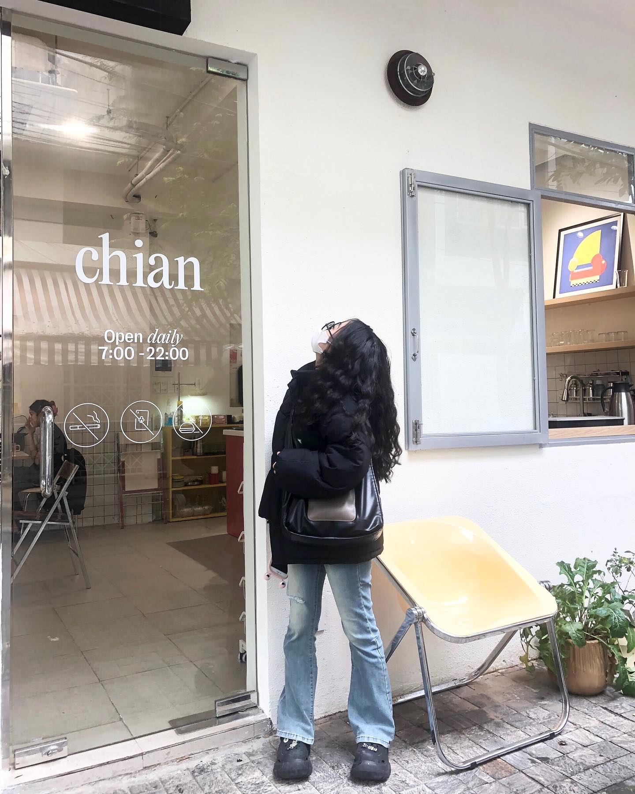
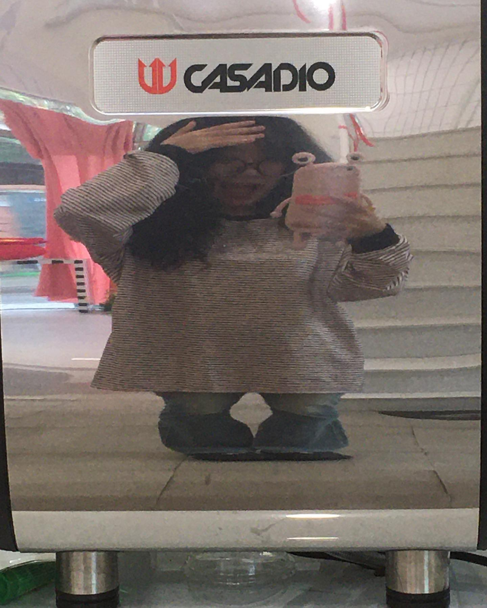
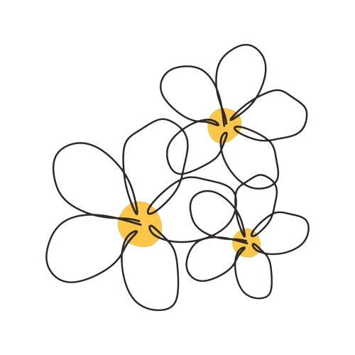

Hãy luôn là 1 Giang Võ xinh xắn, giỏi dang, dễ thương, lạc quan, tích cực, yêu bản thân nhaaaa (≧∇≦)ﾉ
Aiya bên cạnh đó cũng nên là tập cách mở lời với mọi người trong những lúc khó khăn nhất nà ( •̀ ω •́ )✧
"Mít ướt" cũng không sao nà, hờn dỗi nóng giận đôi lúc thất thường cũng không sao nà, miễn là mình muốn mình vui mình thích là được nà ヾ(≧ ▽ ≦)ゝ


Tuy là Công chúa "biếng ăn" nhưng lại rất dễ ăn ♪(´▽｀). Nên là nhớ ăn uống điều độ nhá oujo-sama (～￣▽￣)～
Tuy có những lúc bạn luôn tích cực vui tươi vậy nhưng trái ngược lại sẽ có khoảng thời gian bạn buồn tủi, "mít ướt" với những bất mãn, thất vọng hay những tiêu cực nào đó. Nên là với 1 cung lửa đầy mơ mộng mong rằng bạn sẽ mạnh mẽ vượt qua những khó khăn ấy 1 cách dễ dàng và không nên khắt khe với khuyết điểm của mình nhá ヾ(≧▽≦*)o
Bên cạnh đó bạn là người rất dễ thương, hiểu chuyện, sợ người khác phiền lòng khi có 1 người lạ nào đó cmt dạo str của bạn (*^▽^*) ( note: điều đó giúp tôi tự tin lên 1 chút ). Bạn yêu bản thân bạn điều đó thật tuyệt và mong rằng bạn vẫn mãi như vậy và phát triển mình trở nên 1 thiếu nữ cực kì xinh xắn, dễ thương nhất nhá.

Nên là nhân dịp 8/3 ヾ(＠⌒ー⌒＠)ノ
chúc bác 1 ngày 8/3 thật ý nghĩa, tích cực, vui tươi không buồn tủi nữa nè (p≧w≦q)
( note: mong rằng cái link này mang lại cho bạn 1 tí gì đó giúp bạn đỡ tửi thân như tui đã từng )